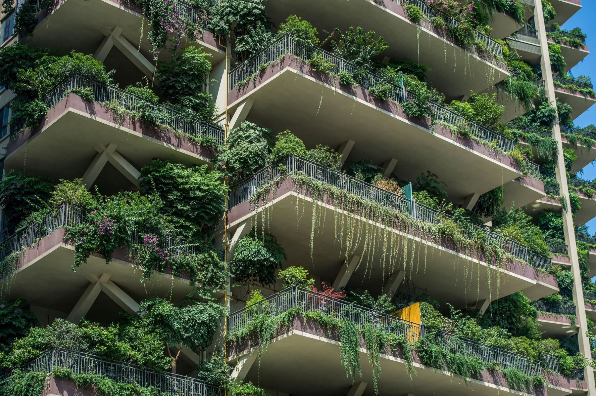
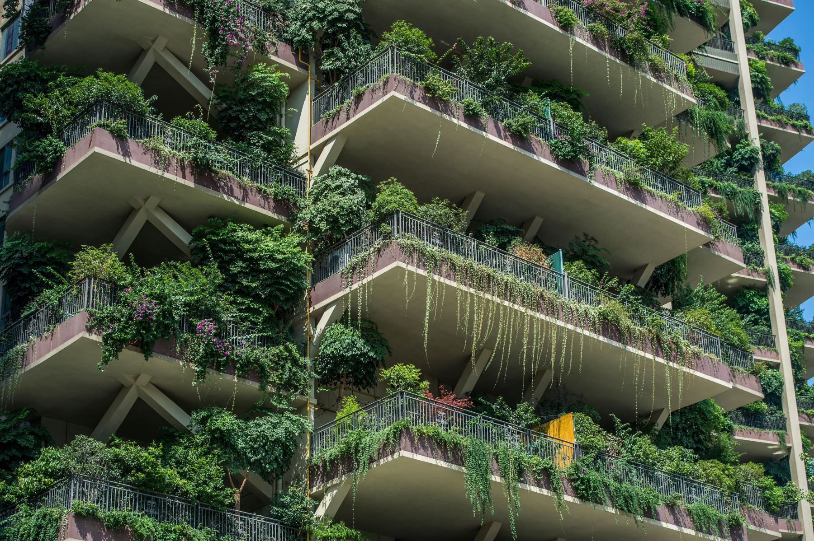

¿Quienes Somos? Fundación Medio Ambiente
Somos una fundación sin animos de lucro que busca crear conciencia sobre el cambio climatico y sus efectos en el medio ambiente, promovemos regulaciones a grandes empresas y reparación de daños
Nuestra misión es: "Concientizar a la mayor cantidad de gente posible y revertir la destrucción de nuestro medio ambiente".
Para ello realizamos eventos ocasionalmente dónde realizamos plantación de arboles, grupos de limpieza en zona, conferencias informativas y protestas organizadas para promover y presionar a gobiernos para que legislen con leyes que favorezcan al medio ambien, como los cambios a nivel personal que contribuyan.
Actividades Realizadas
Mira nuestras ultimas actividades y el impacto que hemos tenido actuando en grupo por un bien común
Nuestra Próximo evento
Puedes ubicar el lugar de nuestro proximo evento en este mapa
Próximos eventos...
- Limpieza de río Mapocho en las afueras de Santiago.
- Protesta pacifica en la Alameda para exijir reparaciónes en Quintero a Empresas responsables.
- Campaña de sembrado de arboles en cajón del Maipo.
- Conferencia de actualización sobre el cambio climatico y su situación mundial en Foro abierto.
Misión Y Visión
- Concientizar a la sociedad
- Impulsar leyes a favor del medio ambiente
- Reparación de daños por empresas
- Mejorar la calidad de nuestro entorno
- Actividades de impacto
- Limpieza de areas contaminadas
Temas de interés
La misión de nuestra fundación es mejorar el entorno en el que vivimos, concientizar a la población para evitar retrocesos sobre lo avanzado,
promover actividades de acción que reflejen un cambio inmediato, como actividades con visión a futuro como planta de arboles y
promulgación de leyes que regulem ,castigen e inabiliten empresarios inconcientes que no cuidan al medio ambiente.
Y recuerda nuestro lema y motivate a apoyar para cambiar la realidad.
Conciencia climatica
sin conciencia de clase
es pura jardinería.
- Eduardo Galeano
 

Algunas definiciones a tener en cuenta.
- Gases de efecto invernadero:
- Sustancias químicas que retienen calor del sol y elevan las temperaturas.
- Cambio transformador:
- Un cambio climático que produce grandes transformaciones.